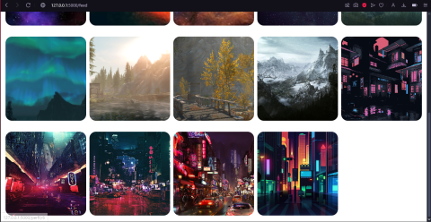
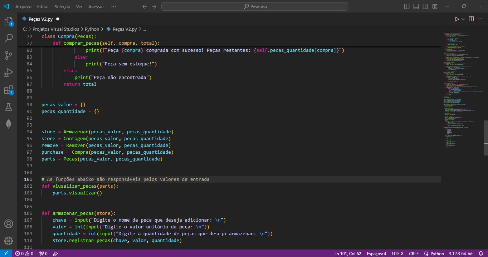

Site inspirado no Pintrest
Desenvolvi uma cópia simplificada do Pinterest em Python, utilizando Flask e SQLAlchemy.
O projeto permite gerenciar imagens, simular funcionalidades de um armazém virtual de mídia
Página de Login
Página de criação de usuário

Página de Feed
Página de perfil
Projeto Armazem de peças
Desenvolvi um projeto em Python utilizando o paradigma de orientação a objetos,
para criar um sistema de gerenciamento de um armazém de peças.
O sistema permite adicionar, consultar, atualizar e remover peças do estoque de forma eficiente.
